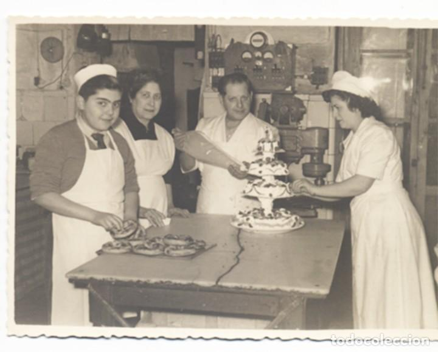
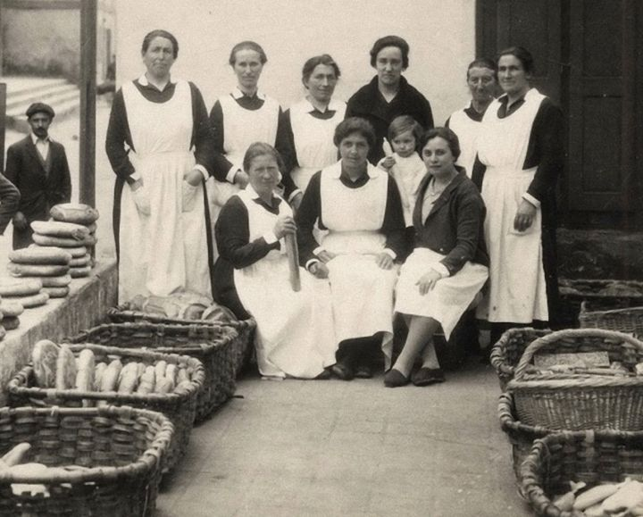

Sobre nosotros
Nuestra historia
En el corazón del barrio San Miguel, nuestra historia comenzó hace más de cuatro décadas, en el año 1982. Fue entonces cuando Atanasio Martín hizo realidad un sueño: abrir una panadería dedicada a rescatar y mantener viva la auténtica tradición panadera.




El legado de 1982
Desde el primer día, en Horno San Miguel nos propusimos un objetivo claro: ofrecer un pan y una repostería que recordaran a los sabores de antaño. Esto significaba un compromiso inquebrantable con la calidad, la paciencia y la selección de las mejores materias primas.
- Ingredientes de verdad. Utilizamos harinas de primera, masa madre cultivada con esmero y hornos que han sido testigos de miles de amaneceres.
- Proceso artesanal. Aquí no hay atajos. Cada pieza se amasa, se fermenta lentamente y se hornea a la perfección, siguiendo las recetas que han pasado de generación en generación.
- Compromiso local. Nacimos y crecimos en el barrio San Miguel, y nuestro compromiso con la comunidad es tan fresco como nuestro pan.
Más que una panadería, una familia
Hoy, Horno San Miguel sigue siendo un negocio profundamente familiar. Tras años de trabajar codo a codo con nuestro fundador Atanasio, la segunda generación ha tomado con orgullo el relevo. Sus hijos Diego y Petra han sabido mantener viva la esencia de nuestra tradición —el respeto por los tiempos de fermentación y las recetas originales— a la vez que incorporan nuevas técnicas y productos que responden a los gustos actuales.
Ellos son los custodios de nuestro legado: los encargados de asegurar que el aroma inconfundible del pan recién horneado siga siendo, día tras día, la señal de bienvenida en el barrio San Miguel.
Lo que nos define
Nuestro pan no es solo un alimento; es el resultado de un proceso lento y respetuoso. Si nos visitas, encontrarás:
- La hogaza clásica de 1982. Nuestro producto estrella, elaborado con la receta original.
- Repostería de temporada. Los dulces que marcan las fiestas y celebraciones de nuestra cultura.
- Un trato cercano. La sonrisa y la recomendación experta de nuestro equipo.
Gracias por ser parte de nuestra historia. ¡Te invitamos a probar el sabor que solo cuatro décadas de pasión y tradición pueden hornear!